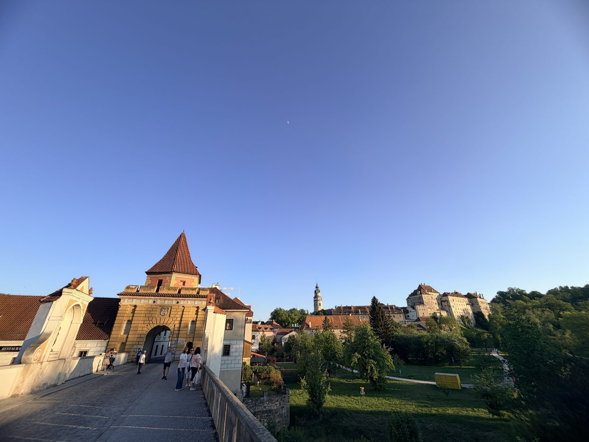
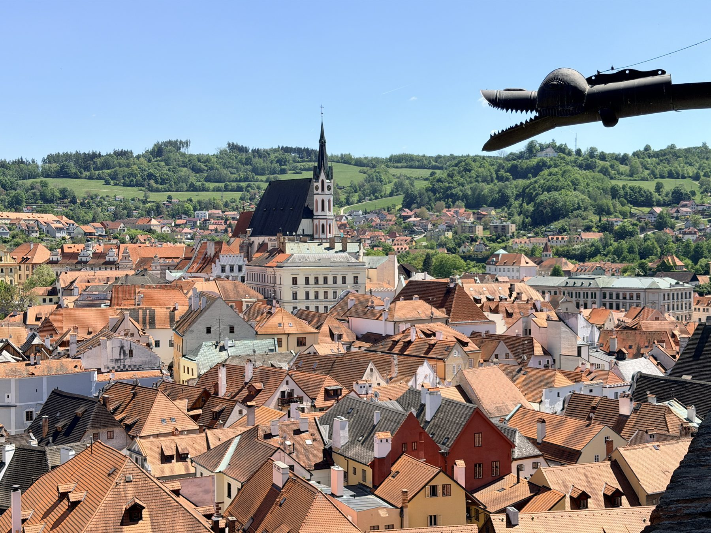
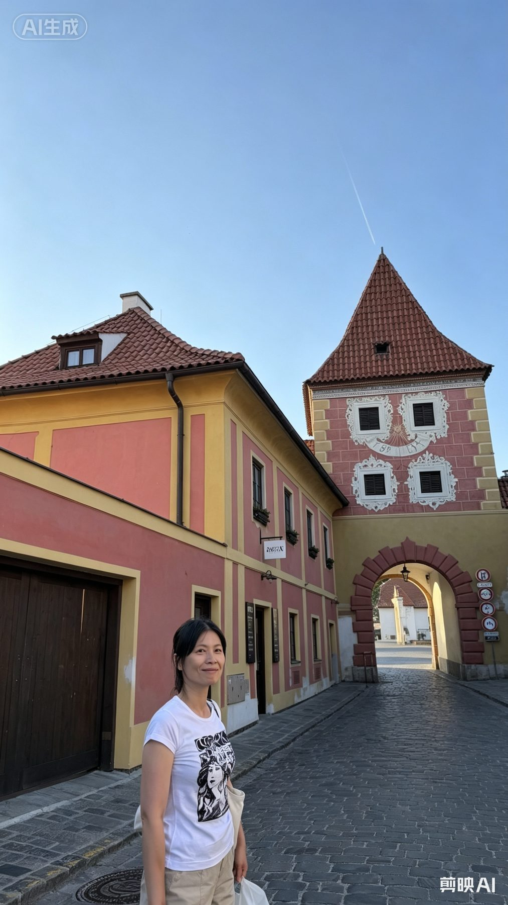
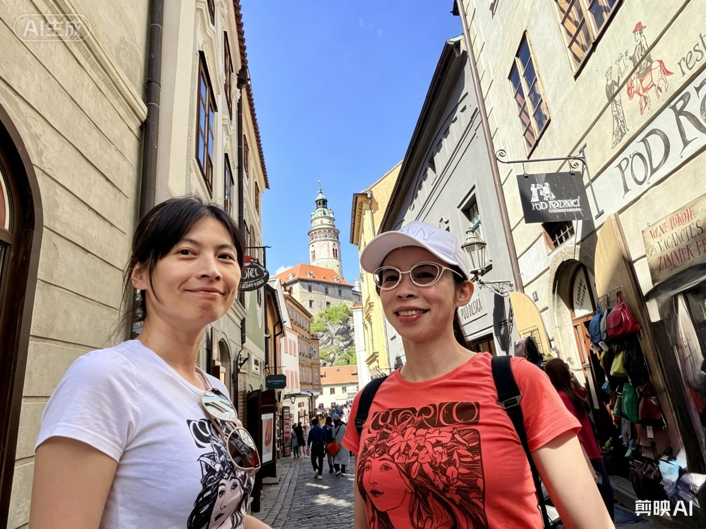
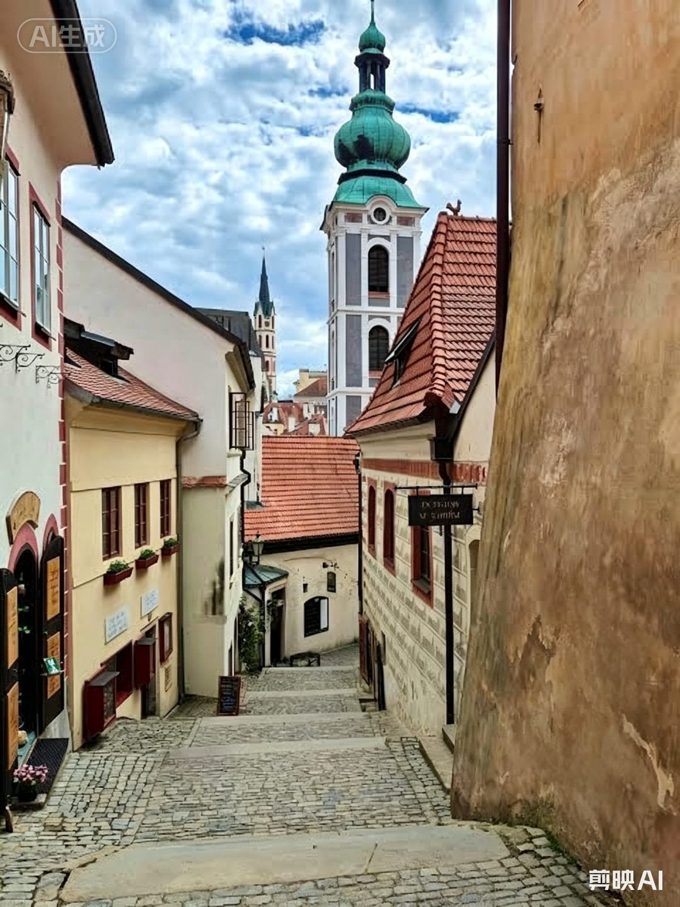
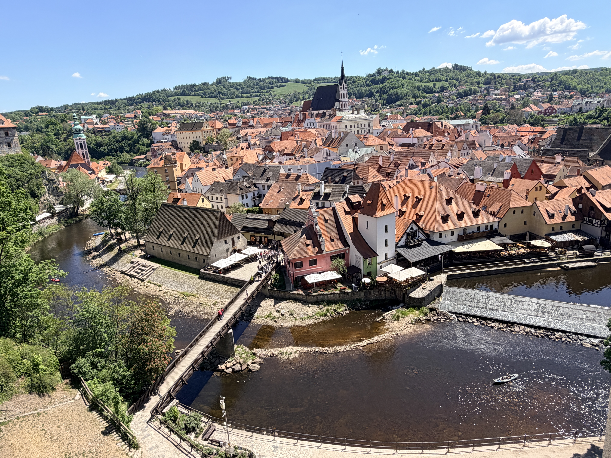
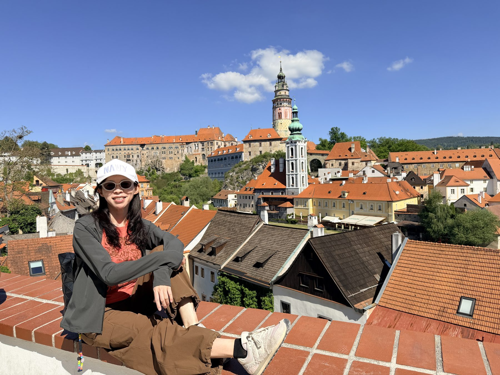
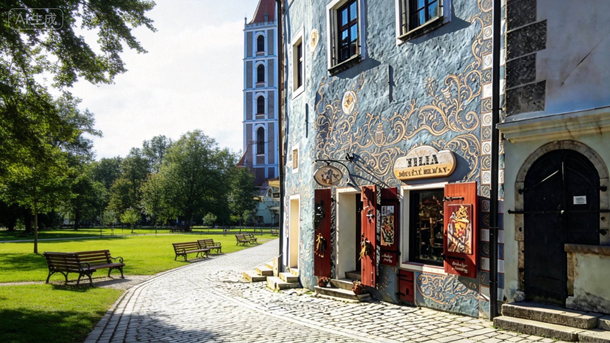

17,000
步 ／ 約 12 公里
TRAVEL MEDICAL RECORD ／ P09
Č E S K Ý K R U M L O V
從彩繪塔頂俯瞰──整座小鎮像一首被遺忘的圓舞曲
布拉格之春門診中心
Prague Spring Clinic Center
病歷表
◇ ─ ◇ ─ ◇
| 姓名：浪人旅者 | 性別：男 | 年齡：35 | 病歷號：PRG-1200-P09 |
| 就診日期：2026 / 08 / 18 | 就診科別：浪漫波希米亞科 | 主治醫師：粘曉青・鄭惠文 | |
| 身高：175 cm | 體重：70 kg | BMI：22.9 | 血壓：120 / 80 mmHg |
Chief Complaint ── 主訴
患者因連續長途步行達 12 公里／天（累計步數突破 17,000 步／天），導致雙下肢嚴重肌肉酸痛，並伴隨中度視覺審美疲勞。
Diagnosis ── 診斷
- 急性波希米亞童話感染（Acute Bohemian Fairytale Infection）
- 併發中世紀懷舊情緒、夜間微醺症候群
Plan & Prescription ── 醫囑與處方
- 強制心靈洗滌：每日傍晚 17:00 後，前往 Český Krumlov 之 Latrán 區石板小巷漫步，嚴禁喧嘩。
- 液體藥物治療：每晚搭配捷克黑啤酒或皮爾森歐克一品脫。
- 視覺排版限制：嚴禁雜誌格狀布局。務必使用非均勻電影感大圖、保留大量留白。
主治醫師 · 大神
Prague Spring
Clinic Center
Clinic Center
布拉格之春
門診中心
核可
門診中心
核可
2026.08.18

CK Castle

Castle Tower

Dr. Nian & Jheng

Cloak Bridge

Latrán Alley

Vltava River

Rooftops

Sgraffito
17:00 — 遊客散去後
當最後一班觀光巴士離去，CK 小鎮才真正甦醒。那是屬於留下來的人的獎賞。